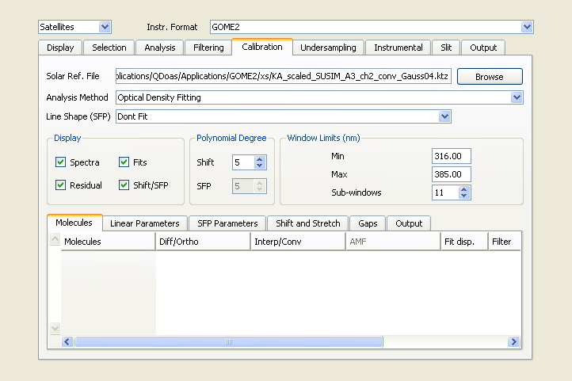

QDOAS Projects Properties : Calibration page

The wavelength calibration procedure developed in QDOAS is based on a non-linear least-squares (NLLS) fitting approach where the shift between the spectrum to calibrate and a high-resolution solar atlas spectrum degraded to the resolution of the instrument is determined on a series of equally spaced short intervals. The Analysis Method (optical density fitting or intensity fitting) can be different from the one selected for the analysis of spectra in the Analysis page.
The procedure also allows characterising the instrumental slit function, through fitting of user-defined Slit Function Parameters (SFP), either the the full-width at half maximum (FWHM) of a analytical line shape or two different stretch factors applied on the grid of a user-defined function (option File). If the slit function is not fitted during the wavelength calibration procedure, the solar spectrum and the instrumental line shape to use for convolutions are defined in the Slit page.
Further details on the wavelength calibration procedure and examples of configuration of this page can be found in the QDOAS Software User Manual.
The wavelength interval used for the calibration must be specified in the Window limits (nm) frame. It should cover all the spectral analysis windows defined under the Analysis Windows node of the project tree. This calibration interval is divided in a number of equally spaced sub-windows and, the shift and the slit function parameters (SFP) are fitted using the NLLS approach in each interval.
The shift values determined in all sub-windows are then used to reconstruct an accurate wavelength calibration. Similarly, the wavelength dependent slit function is determined by polynomial fitting through individual SFP values. A different polynomial degree can be specified for the shift and for the slit function. The two information (wavelength calibration and variation of the slit function) are subsequently used e.g. to convolve high resolution cross sections before the analysis of spectra and to build undersampling cross-sections.
There are two cases to consider :
-
the slit function of the instrument is known and there is no need to characterise it once again (line shape not fitted). Then the Solar Ref. File in this page is disabled; it should be given in the Slit page with the instrumental line shape.
- the slit function of the instrument need to be characterized (selection of a analytical Line Shape); then the Solar Ref. File should contain a high-resolution solar spectrum. Because QDOAS uses Fourier transform (FT) in order to make the NLLS algorithm fast enough, a high-resolution solar spectrum sampled on a constant grid is expected.
The wavelength calibration uses the same property sheet as the Analysis windows properties. The configuration of these pages is usually limited to the specification of the degree of the polynomial to use in the DOAS equation (different from the polynomial used to build the final grid from the individual values of the shift resulting from the fit as described above), the slit function parameters to fit according to the selection of the line shape and the shift between the spectrum to calibrate and the solar spectrum. But the algorithm can take also atmospheric absorption, Ring effect and offset correction into account.
See also the QDOAS Software User Manual for further details.
When the calibration procedure is applied, a page named « Kurucz » appears in the plot area of the program. This page includes four kinds of plot :
| Spectra | the complete fit between the observed and the calculated spectra; |
| Residual | the residual of the fit |
| Fits | fit of the Ring effect and/or atmospheric absorptions if any; |
| Shift/SFP | the wavelength dependency of the shift and the slit function parameters over the whole detector. |
It could be interesting to uncheck these plot when large amount of data are analyzed in one shot with output production although the use of the doas_cl command line tool is recommended in this case.